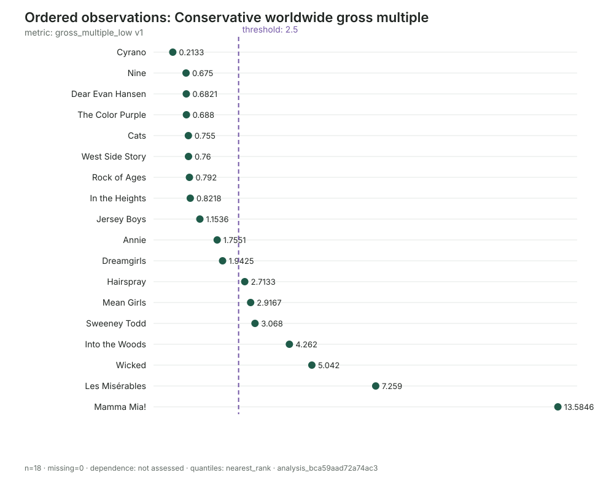

Do theatrical adaptations of stage musicals make money?
A worked CLI tutorial using Wikipedia-reported production budgets and worldwide box office. We select films before seeing outcomes, preserve budget ranges, and refuse to call a gross multiple accounting profit.

What we are testing
- Can membership be fixed before outcomes?
- Can research remain outside the package?
- Can budget ranges survive measurement?
- Can calculated values remain candidates?
- Can missing avoid becoming zero?
- Can a proxy remain distinct from profit?
- Can every chart identify its analysis?
- Can the result improve a greenlight decision?
1Frame the decision before assembling data
A producer sees a known title, proven songs, awards, and an existing audience. That inside view matters, but it does not answer the outside-view question:
The unit is one film adaptation. The observable outcome is worldwide theatrical gross relative to reported production budget. It is useful but incomplete: cinemas retain part of gross, production budgets usually omit marketing, and ancillary revenue is absent.
The workflow is: define the decision and membership rule; research provenance and financial fields; register sources, cases, metrics, and candidates; decide which evidence to accept and state its coverage; then lock, analyze, and interpret the resulting reference class.
2Start a workspace and version the target
The checked-in cohort.json is the canonical input. To execute the entire tutorial against a new workspace, run:
python simulations/theatrical-musicals/rebuild.py \
/tmp/theatrical-musicals-auditThe runner prints every Flyvbjerg command, calls flyvbjerg next after each material stage, and ends with validation and distribution summaries. It performs no browsing and never constructs or executes an EDSL Job.
The corresponding opening stage is:
mkdir theatrical-musicals
cd theatrical-musicals
flyvbjerg init
flyvbjerg target create theatrical_musical \
--name "Theatrical musical adaptation economics" \
--from target.json
flyvbjerg collection new theatrical_musicals \
"US theatrical stage-musical film adaptations, 2006–2025 seed cohort"
flyvbjerg nextShow representative next step
{
"command": "flyvbjerg next",
"status": "ok",
"data": {"target_count": 1, "collection_count": 1, "unresolved_intake_count": 0},
"next_steps": [{
"id": "register_evidence",
"command": "flyvbjerg source add theatrical_musicals --url URL"
}]
}The target is versioned. The new collection is exploratory; its title alone does not make it a valid reference class.
3Freeze membership before collecting outcomes
Include English-language feature films directly adapted from a previously produced stage musical, released theatrically in the United States from 2006 through 2025 by an established distributor. Exclude original screen musicals, animation, concert and television films, streaming-first releases, and sequels that do not directly adapt the stage work.
Included
Hairspray, Les Misérables, Cats, In the Heights, Wicked, and other films satisfying stage provenance and release rules.
Excluded
La La Land is an original screen musical. Mamma Mia! Here We Go Again is a sequel rather than a direct adaptation of the stage book.
Enumeration is itself ledger data. The fixture records 20 candidates before measurement: 18 inclusions and two exclusions. The runner places every candidate in intake, resolves inclusions to cases, and defers exclusions with stable reason codes such as original_screen_musical. Excluded rows contain no budget or gross fields.
flyvbjerg intake add theatrical_musicals wiki_la_la_land \
membership_candidate \
"Original screen musical rather than an adaptation" \
--proposed-name "La La Land"
flyvbjerg intake defer theatrical_musicals INTAKE_ID \
--reason original_screen_musical
flyvbjerg next4The coding agent performs the research
The agent searches and reads Wikipedia film histories using its own tools. Flyvbjerg never follows URLs, downloads pages, or turns source silence into evidence.
| Agent action | Flyvbjerg action |
|---|---|
| Find candidate adaptations | None |
| Check stage provenance and US theatrical release | Store a case identity |
| Read budget bounds and worldwide gross | Store candidates linked to the source |
| Find conflict or omission | Keep unresolved or record an absence state |
| Calculate gross multiples | Preserve candidates and evidence decisions |
Wikipedia is good best-available evidence for this first pass. A high-stakes investment should verify contested financial values with studio records, trade reporting, and commercial box-office data.
5Register source identities without fetching
flyvbjerg source add theatrical_musicals \
--url "https://en.wikipedia.org/wiki/Mamma_Mia!_(film)" \
--title "Mamma Mia! — Wikipedia" \
--kind encyclopedia --source-id wiki_mamma_mia
flyvbjerg source add theatrical_musicals \
--url "https://en.wikipedia.org/wiki/Cats_(2019_film)" \
--title "Cats — Wikipedia" \
--kind encyclopedia --source-id wiki_catsShow one source identity
{
"source_id": "wiki_mamma_mia",
"url": "https://en.wikipedia.org/wiki/Mamma_Mia!_(film)",
"title": "Mamma Mia! — Wikipedia",
"kind": "encyclopedia",
"retrieved": "2026-08-14T02:36:45Z"
}flyvbjerg capture add can hash and preserve it. Flyvbjerg still never downloads it.6Create persistent film cases
flyvbjerg case add theatrical_musicals \
--id mamma_mia --name "Mamma Mia!" --type theatrical_film
flyvbjerg case add theatrical_musicals \
--id cats --name "Cats" --type theatrical_film
flyvbjerg case add theatrical_musicals \
--id wicked --name "Wicked" --type theatrical_filmThe seed has 18 film cases, from Dreamgirls through Wicked. Identity is separate from measurement: a later source correction updates evidence attached to a film, not the film itself.
7Define metrics before assigning values
Five versioned metrics preserve reported ranges instead of inventing midpoints:
budget_low_musdLower production-budget bound, nominal $m.
budget_high_musdUpper production-budget bound, nominal $m.
worldwide_gross_musdReported worldwide theatrical gross, nominal $m.
gross_multiple_lowConservative multiple: gross ÷ high budget.
gross_multiple_highOptimistic multiple: gross ÷ low budget.
flyvbjerg metric add theatrical_musicals gross_multiple_low \
--kind ratio --role outcome --unit x --from metric-multiple-low.json
flyvbjerg metric add theatrical_musicals gross_multiple_high \
--kind ratio --role outcome --unit x --from metric-multiple-high.json8Add reported and calculated candidates
Cats has an $80–100m reported budget and $75.5m worldwide gross. Store the range and both resulting multiples:
flyvbjerg observation add theatrical_musicals \
--subject-kind case --subject cats --metric budget_low_musd \
--value 80 --source wiki_cats --period 2019 --method reported
flyvbjerg observation add theatrical_musicals \
--subject-kind case --subject cats --metric budget_high_musd \
--value 100 --source wiki_cats --period 2019 --method reported
flyvbjerg observation add theatrical_musicals \
--subject-kind case --subject cats --metric worldwide_gross_musd \
--value 75.5 --source wiki_cats --period 2019 --method reported
flyvbjerg observation add theatrical_musicals \
--subject-kind case --subject cats --metric gross_multiple_low \
--value 0.755 --source wiki_cats --period 2019 --method calculated
flyvbjerg observation add theatrical_musicals \
--subject-kind case --subject cats --metric gross_multiple_high \
--value 0.9437 --source wiki_cats --period 2019 --method calculatedAll five remain candidates. Deterministic arithmetic can still use the wrong source, units, bound, or formula.
9Accept evidence explicitly
flyvbjerg observation decide theatrical_musicals OBSERVATION_ID \
--accept \
--reason "Reported field supported by the registered page; range bounds preserved separately."
flyvbjerg observation decide theatrical_musicals CALCULATED_ID \
--accept \
--reason "Inspected calculation from reported gross and the upper budget bound."Show representative decision
{
"subject_kind": "observation",
"subject_id": "obs_...",
"decision": "accepted",
"reason": "Inspected calculation from reported gross and the upper budget bound."
}The workspace has 90 observations—five per film—and an explicit review decision for each. A rejection would preserve the candidate and its exclusion reason.
10Make the denominator inspectable
flyvbjerg coverage set theatrical_musicals \
--subject-kind case --subject cats --metric gross_multiple_low \
--state observed \
--reason "Accepted multiple with complete reported inputs."All 18 seed films have observed ratio bounds. That does not prove every eligible film would. An expanded enumeration may produce not_found, conflicted, or other explicit absence states.
11Freeze accepted evidence into an analysis
flyvbjerg analysis create theatrical_musicals \
--name "Conservative worldwide gross multiple" \
--metric gross_multiple_low \
--target theatrical_musical --target-version 1Show the locked distribution
{
"analysis_id": "analysis_bca59aad72a74ac3",
"n_subjects": 18,
"dependence_status": "not_assessed",
"n_clusters": null,
"distribution": {
"min": 0.2133,
"median": 1.45435,
"max": 13.5846,
"mean": 2.7269,
"quantiles": {"0.25": 0.755, "0.5": 1.1536, "0.75": 3.068},
"quantile_convention": "nearest_rank"
}
}The 2.73x mean is pulled upward by Mamma Mia! at 13.58x. The conventional median and nearest-rank P50 are both visible; neither is silently substituted for the other.
12Evaluate thresholds without renaming the outcome
Below 1.0x is a strong theatrical downside signal. From 1.0x to under 2.5x is economically indeterminate. At least 2.5x is a strong theatrical-recovery proxy—not audited profit.
flyvbjerg threshold analysis_bca59aad72a74ac3 \
--operator lt --value 1.0
flyvbjerg threshold analysis_bca59aad72a74ac3 \
--operator ge --value 2.5
flyvbjerg locate analysis_bca59aad72a74ac3 \
--value 2.5 --label "Strong theatrical-recovery proxy"| Zone | Observed films | Meaning |
|---|---|---|
| Below 1.0x | 8/18 (44.4%) | Gross did not match production budget. |
| 1.0x–2.5x | 3/18 (16.7%) | Profit unresolved by common fields. |
| At least 2.5x | 7/18 (38.9%) | Strong theatrical recovery proxy. |
At a looser 2.0x boundary, budget ranges move the count from 7/18 to 9/18. At 1.0x and 2.5x, the classifications are unchanged by budget uncertainty.
13Generate deterministic plots with receipts
flyvbjerg plot analysis_bca59aad72a74ac3 \
--kind ordered --threshold 2.5 \
--output plots/conservative-multiple-ordered.svg
flyvbjerg plot analysis_bca59aad72a74ac3 \
--kind ecdf --threshold 2.5 \
--output plots/conservative-multiple-ecdf.svg
The chart exposes the barbell: eight cases below 1.0x and a long upper tail reaching 13.58x. Each SVG has a JSON receipt recording the analysis ID, parameters, timestamp, and content hash.
14Inspect the evidence ledger
flyvbjerg validate
flyvbjerg nextShow validation result
{
"command": "flyvbjerg validate",
"status": "ok",
"data": {"valid": true, "json_records": 264}
}15Use the result as an outside view—not a verdict
| Analytical danger | Design response |
|---|---|
| Remembering only hits and notorious bombs | Freeze membership from provenance and release facts. |
| Calling box-office gross studio profit | Name the proxy and use transparent thresholds. |
| Choosing a favorable budget midpoint | Preserve both bounds and analyze both. |
| Letting blockbusters define the typical case | Show ordered values, medians, and empirical quantiles. |
| Deleting pandemic films after weak outcomes | Retain eligible cases; show release period as sensitivity. |
| Interpreting absent data as failure | Use coverage states; missing is never zero. |
| Calling a seed list a population base rate | Carry the enumeration limitation into the decision. |
A greenlight model should add distributor rentals, marketing, financing, participations, ancillary revenue, and cash-flow timing. The historical distribution challenges an inside-view forecast; it does not provide audited probabilities of net profit.